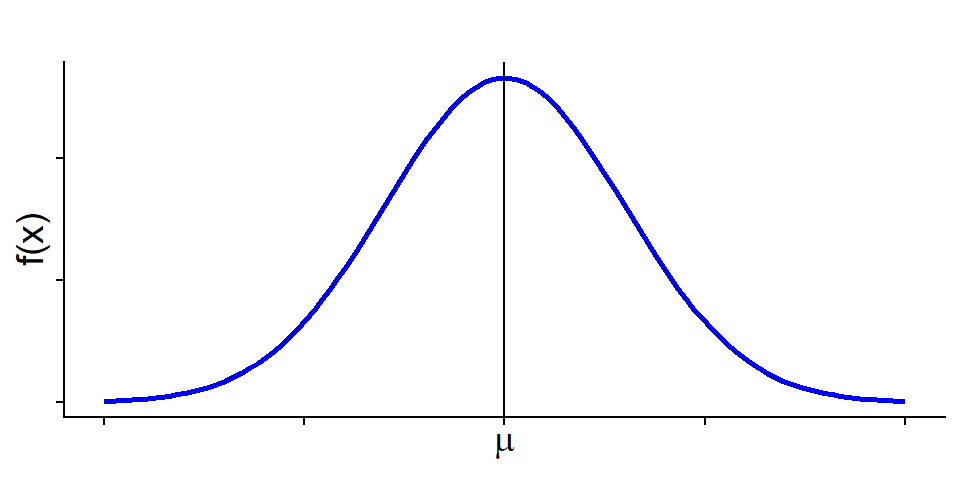
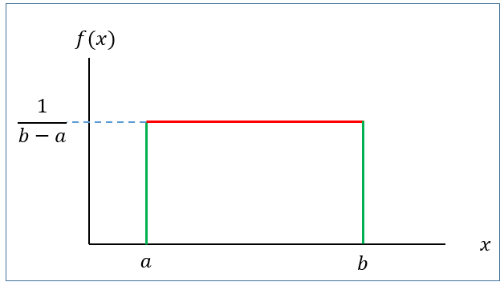
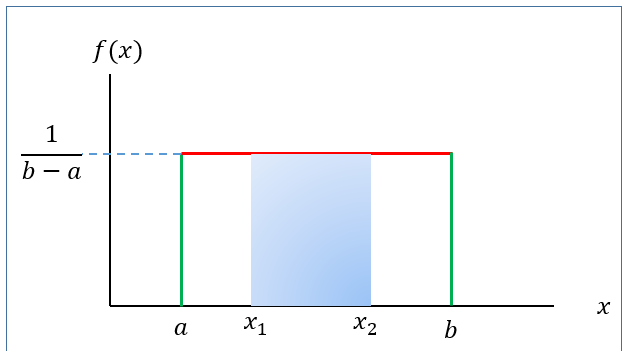
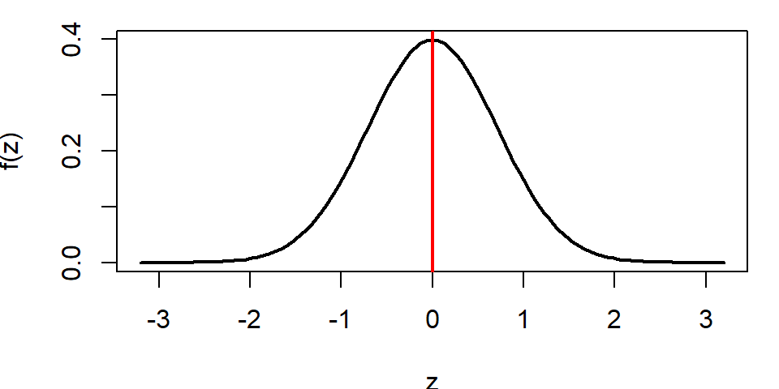
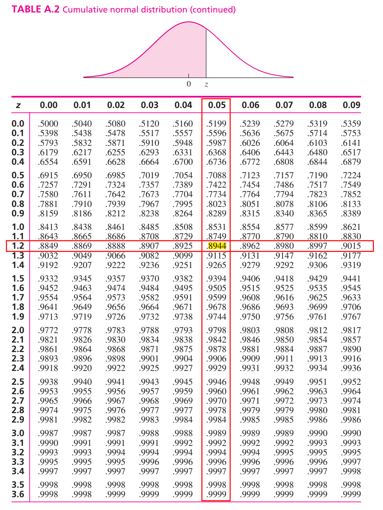
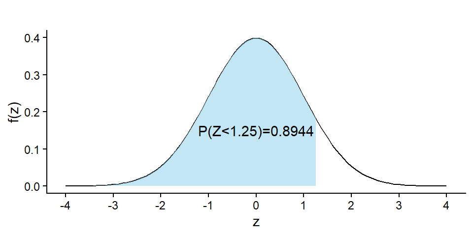
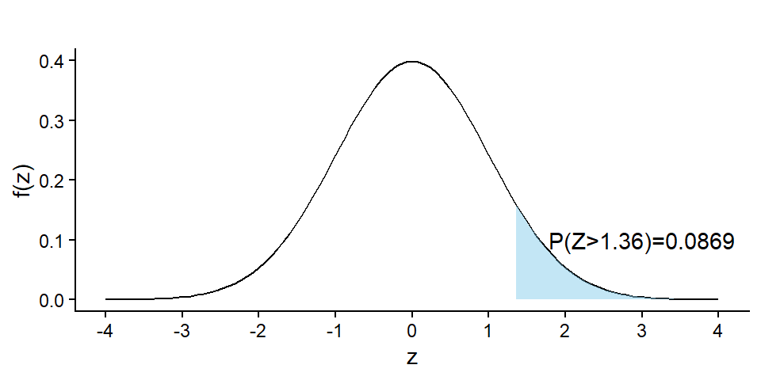
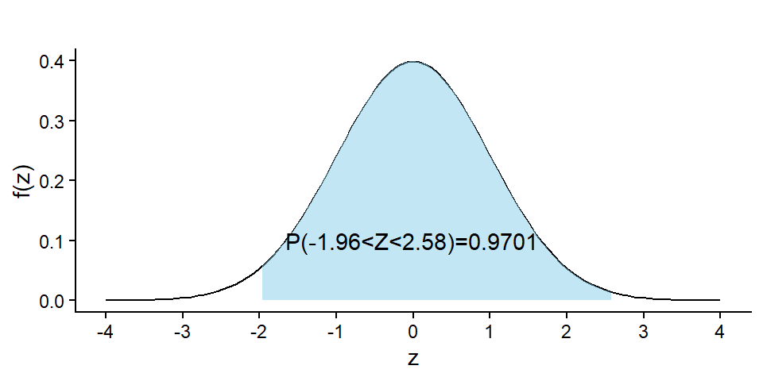
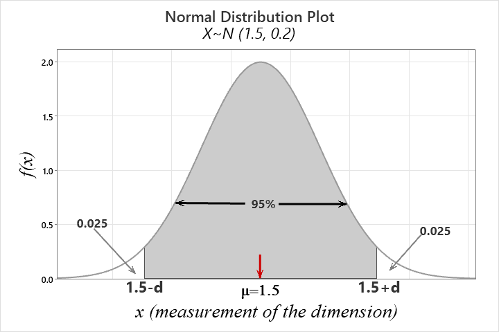

4 Continuous r.v and probability density function
4.1 Definition
A continuous r.v \(X\) must have a probability density function (PDF) \(f(x)\) such that
1) \(f(x) \ge 0\) [Non-negativity]
2) \(\int_{x\in \mathbb{R}} f(x)dx =1\) [Total AREA under the curve \(f(x)\) always 1]
3) \(P(a<X<b)=\int_a^b f(x) dx\)
4.2 Illustration with an example
Given \(f(x)=\frac{1}{2}x \ \ ; 0\le x\le 2\)
a) Show/plot the graph of \(f(x)\).
b) Is \(f(x)\) a PDF?
c) Find \(P(X<1.0)\).
d) Find \(P(X=1.0)\)
Note
We always remember that Probability in an interval of \(X\) is actually the \(AREA\) under the pdf \(f(x)\).
Problem 4.1 A random variable has the following density function.
\[f(x)=1-0.5x \ \ ; \ \ 0<x<2\]
a) Graph the density function.
b) Verify that \(f(x)\) is a density function.
c) Fond \(P(X>1)\).
d) Find \(P(X<0.5)\).
e) Find \(P(X=1.5)\).
N.B: \(P(X=a)=0\) as well as \(P(X=b)=0\). So, \(P(X\le a )\) is same as \(P(X<a)\).
4.3 CDF of continuous r.v \(X\)
By definition, CDF,
\[F(x)=P(X\le x)= \int_{-\infty}^{x} f(x)dx\]
Therefore,
\(f(x)=\frac{d}{dx} F(x)\).
\(P(a<X<b)=F(b)-F(a)\).
Problem 4.2 (Walpole et al. 2017)Consider the probability density function (PDF):
\[f(x)=k\sqrt x \ \ ; \ \ 0<x<1\]
(a) Evaluate \(k\).
(b) Find \(F(x)\) and use it to evaluate \(P(0.3<X<0.6)\).
Solution:
(a) Since \(f(x)\) is a PDF so
\[\int_{-\infty}^{+\infty} f(x)dx =1\]
\[\implies \int_{0}^{1} k\sqrt x dx=1\]
\[\implies k \int_{0}^{1} x^{\frac{1}{2}} \ \ dx=1\]
\[\implies k \left [ \frac{x^{\frac{1}{2}+1}}{\frac{1}{2}+1} \right]_{0}^{1}=1\]
\[\implies k \cdot \frac{2}{3} \left [ x^{\frac{3}{2}} \right]_{0}^{1}=1 \]
\[\implies k\cdot \frac{2}{3} [ 1^{3/2} -0^{3/2}]=1\]
\[\implies k\cdot \frac{2}{3}\cdot 1=1\]
\[\therefore k=\frac{3}{2}\]
So, \(f(x)=\frac{3}{2} \sqrt x \ \; \ \ 0<x<1\)
(b) By definition
\[F(x)=P(X\le x) \]
\[=\int_{0}^{x} f(x) \ \ dx=\int_{0}^{x} \frac{3}{2} x^{\frac {1}{2}} dx\]
\[=\frac{3}{2} \left [\frac {x^{\frac{3}{2}} }{\frac{3}{2}} \right]_{0}^{x}\]
\[= x^{\frac {3}{2}}\]
\[\therefore F(x)=x^{\frac{3}{2}} \ \ ; \ \ 0<x<1\]
Now,
\[P(0.3<X<0.6)=F(0.6)-F(0.3)=(0.6)^\frac{3}{2}-(0.3)^\frac{3}{2}=0.3005 \]
Problem 4.3 (Walpole et al. 2017) Suppose that the error in the reaction temperature, in \(^0C\), for a controlled laboratory experiment is a continuous random variable \(X\) having the probability density function :
\[f(x) =\frac{1}{3} x^2 \ \ ; \ \ -1<x<2\]
(a) Verify that \(f(x)\) is a PDF.
(b) Find \(F(x)\) and then evaluate \(P(0<X\le 1)\).
Solution: TRY yourself.
4.4 Expectation and variance of continuous r.v
If \(X\) is a continuous r.v with PDF \(f(x)\) then
Expected value of \(X\) is
\[\mu=E(X)= \int_{x\in \mathbb{R}} x\cdot f(x)dx\] Variance of \(X\) is
\[Var(X)=E(X^2)-\mu^2=\int_{x\in \mathbb{R}} x^2\cdot f(x)dx-\mu^2\]
4.5 Uniform distribution
A continuous r.v \(X\) is said to be uniform r.v ranges between \(a\) to \(b\) if it has the following PDF
\[f(x)=\frac{1}{b-a} \ \ ; \ \ a<x<b \tag{4.1}\]

with
Mean: \(\mu=E(X)=\frac{a+b}{2}\)
Variance: \(\sigma^2=\frac{(b-a)^2}{12}\)
We write, \(X\sim U(a,b)\)
4.5.1 Finding probability for uniform r.v
If \(X\sim U(a,b)\) then the \(P(x_1<X<x_2)\) is actually the area of the shaded rectangle.

That is,
\[P(x_1<X<x_2)=Base\times Height=(x_2-x_1)\times \frac{1}{b-a}\]
Problem 4.4 When a motorist stops at a red light at a certain intersection, the waiting time for the light to turn green, in seconds, is uniformly distributed on the interval (0, 30).
Find the probability that the waiting time is between 10 and 15 seconds.
Find the mean and variance of the waiting time.
4.6 Normal or Gaussian r.v
The most important probability distribution for describing a continuous random variable is the normal probability distribution. The normal distribution has been used in a wide variety of practical applications in which the random variables are heights and weights of people, test scores, scientific measurements, amounts of rainfall, and other similar values.
4.6.1 Definition
A continuous r.v \(X\) is said to be normal r.v if it has the following PDF:
\[f(x)=\frac{1}{\sigma \sqrt{2\pi}} e^{-\frac{1}{2} (\frac{x-\mu}{\sigma})^2}\ \ ; -\infty<x<\infty \tag{4.2}\]
The graph of \(f(x)\) is called normal curve (Figure 4.2).
Mean: \(E(X)=\mu\)
Variance: \(Var(X)=\sigma^2\)
We write: \(X\sim N(\mu , \sigma^2)\)
Properties of normal distribution
The total area under the normal curve \(f(x)\) is 1 that is
\[\int_{-\infty}^{\infty} f(x)dx=1\]
Normal distribution is symmetric about mean, \(\mu\)
Mean, median and mode is identical in normal distribution that is \(Mean=Median=Mode=\mu\)
Almost \(99\%\) observations of \(X\) lie within 3 standard deviation of mean that is
\[P(\mu-3\sigma<X<\mu+3\sigma)\approx 0.99\]
Almost \(95\%\) observations of \(X\) lie within 2 standard deviation of mean that is \[P(\mu-2\sigma<X<\mu+2\sigma)\approx 0.95\]
Almost \(68\%\) observations of \(X\) lie within 1 standard deviation of mean that is \[P(\mu-\sigma<X<\mu+\sigma)\approx 0.68\]
4.6.2 Standard normal r.v
Suppose \(X\sim N(\mu, \sigma^2)\). Then the variable \(Z=\frac{X-\mu}{\sigma}\) is said to be standard normal variable with PDF
\[f(z)=\frac{1}{\sqrt {2\pi}} e^{-\frac{1}{2}z^2} \ \ ; -\infty<z<\infty \tag{4.3}\]
Mean: \(E(Z)=0\)
Variance: \(Var(Z)=1\)
We write: \(Z\sim N(0,1)\)

4.6.3 Computing probability(area) under standard normal curve
To compute area (probability) under the standard normal curve for a given interval of \(z\) we use standard Normal Distribution table which provides cumulative probabilities.
RULE-I: Suppose we want to find \(P(Z<1.25)\).
From TABLE A.2 in Navidi (2011) we have
\[P(Z<1.25)=0.8944\]

The probability \(P(Z<1.25)\) is shown in Figure 4.4.

RULE-II: Now we find \(P(Z>1.36)\)
So, due to symmetry we can write \(P(Z>1.36)=P(Z<-1.36)=0.0869\)

RULE-III: Let us evaluate \(P(-1.96<Z<2.58)\).
We can write
\[=P(-1.96<Z<2.58)\]
\[=P(Z<2.58)-P(Z<-1.96)\]
\[=0.9951-0.0250=0.9701\]

4.6.4 Finding quantiles (percentiles, quartiles, deciles etc.) of \(Z\)
What is the \(90^{th}\) percentile of \(Z\)? To answer this question, let \(k\) is the \(90^{th}\) percentile of \(Z\). So we can write
\[P(Z<k)=0.90 \ \ \ \ \ \ \ \ \ \cdot \cdot \cdot (1)\]
From TABLE A.2 in Navidi (2011) we have
\[P(Z<1.28)=0.90 \ \ \ \ \ \ \ \ \ \cdot \cdot \cdot(2)\]
Comparing eq.(1) with eq.(2) we have \(k=1.28\). So the \(90^{th}\) percentile of \(Z\) is \(1.28\).
Problem 1 Find \(c\) such that \(P(Z>c)=0.05\).
Problem 2 Find \(c\) such that \(P(-c<Z<c)=0.95\).
4.6.5 Computing probability(area) under normal curve:
Problem 4.5 Suppose \(X\sim N(30, 5^2)\) . Then find the following:
a) \(P(X<22)\)
b) \(P(X>44)\)
c) \(P(20<X<35)\)
d) If \(P(X<x)=0.25\) then find the value of \(x\).
Solution:
Here, \(\mu=30\) and \(\sigma=5\)
a) \(P(X<22)=P(\frac{X-\mu}{\sigma}<\frac{22-30}{5})=P(Z<-1.60)=0.0548\).
b) \(P(X>44)=P(\frac{X-\mu}{\sigma}>\frac{44-30}{5})\)
\(=P(Z>2.80)=P(Z<-2.80)=0.0026\)
c) \(P(20<X<35)=P(\frac{20-30}{5}<\frac{X-\mu}{\sigma}<\frac{35-30}{5})\)
\(=P(-2<Z<1)=P(Z<1)-P(Z<-2)\)
\(=0.8413-0.0228=0.8185\)
d) To find the value of \(x\) we proceed this way.
\[P(X<x)=0.25\]
\[\implies P(\frac{X-\mu}{\sigma}<\frac{x-30}{5})=0.25\]
\[\implies P(Z<\frac{x-30}{5})=0.25 \ \ \ \ \ \cdot \cdot \cdot (1)\]
From TABLE (Appendix B) we have
\[P(Z<-0.67)=0.25 \ \ \ \ \cdot \cdot \cdot (2)\]
Comparing (1) with (2) we can write
\[\frac{x-30}{5}=-0.67\]
\[\implies x=30+(-0.67)\times 5\]
\[\therefore x=26.65\]
Note
If \(P(X<x)=p\) and
\(P(Z<z)=p\) then
\[x=\mu+z\sigma\]
4.6.6 Applications of the Normal Distribution (Walpole et al. 2017)
Example 6.7: A certain type of storage battery lasts, on average, 3.0 years with a standard deviation of 0.5 year. Assuming that battery life is normally distributed, find the probability that a given battery will last less than 2.3 years.
Example 6.8 : An electrical firm manufactures light bulbs that have a life, before burn-out, that is normally distributed with mean equal to 800 hours and a standard deviation of 40 hours. Find the probability that a bulb burns between 778 and 834 hours.
*Example 6.9 : In an industrial process, the diameter of a ball bearing is an important measurement. The buyer sets specifications for the diameter to be \(3.0 \pm 0.01\) cm. The implication is that no part falling outside these specifications will be accepted. It is known that in the process the diameter of a ball bearing has a normal distribution with mean \(\mu = 3.0\) and standard deviation \(\sigma = 0.005\). On average, how many manufactured ball bearings will be scrapped?
Example 6.10 : Gauges are used to reject all components for which a certain dimension is not within the specification \(1.50 \pm d\). It is known that this measurement is normally distributed with a mean of 1.50 and a standard deviation of 0.2. Determine the value d such that the specifications “cover” 95% of the measurements.
Solution:
Let, \(X=measurement \ \ of \ \ certain \ \ dimension\)
Given, \(X\sim N(1.5,0.2)\)
According to question,
\(P(1.5-d<X<1.5+d)=0.95\)
So, \(P(X<1.5-d)+P(X>1.5+d)=0.05\)

So, \(P(X <1.5-d)=0.025 \ \ \ \ \cdot \cdot \cdot(1)\)
\(\implies P(\frac{X-\mu}{\sigma} <\frac{1.5-d-1.5}{0.2})=0.025\)
\(\implies P(Z<\frac{-d}{0.2})=0.025 \ \ \ \ \cdot \cdot \cdot(1)\)
From TABLE A.2 we have
\(P(Z<-1.96)=0.025 \ \ \ \ \ \cdot \cdot\cdot(2)\)
Comparing eq.(1) with eq. (2) we have
\(\frac{-d}{0.2}=-1.96\)
\(\implies -d=-0.392\)
\(\therefore d=0.392\)
Alternative:
\(P(X <1.5-d)=0.025 \ \ \ \ \cdot \cdot \cdot(1)\)
But, \(P(Z<-1.96)=0.025 \ \ \ \ \cdot \cdot \cdot (2)\)
Hence, \(1.5-d=\mu+z\sigma\); where \(z=-1.96\)
\(\implies 1.5-d=1.5-1.96\times 0.2\)
\(\therefore d=0.392\)
*Exercise 6.11 : A soft-drink machine is regulated so that it discharges an average of 200 milliliters per cup. If the amount of drink is normally distributed with a standard deviation equal to 15 milliliters,
- what fraction of the cups will contain more than 224 milliliters?
- what is the probability that a cup contains between 191 and 209 milliliters?
- how many cups will probably overflow if 230-milliliter cups are used for the next 1000 drinks?
- below what value do we get the smallest 25% of the drinks?
*Exercise 6.14 The finished inside diameter of a piston ring is normally distributed with a mean of 10 centimeters and a standard deviation of 0.03 centimeter.
- What proportion of rings will have inside diameters exceeding 10.075 centimeters?
- What is the probability that a piston ring will have an inside diameter between 9.97 and 10.03 centimeters?
- Below what value of inside diameter will 15% of the piston rings fall?
Exercise 6.17 : The average life of a certain type of small motor is 10 years with a standard deviation of 2 years. The manufacturer replaces free all motors that fail while under guarantee. If she is willing to replace only 3% of the motors that fail, how long a guarantee should be offered? Assume that the lifetime of a motor follows a normal distribution.
4.7 Some important derived continuous distribution
4.7.1 Chi-square (\(\chi^2\)) distribution
The continuous random variable X has a chi-squared distribution, with \(\nu\) degrees of freedom, if its density function is given by \[f(x)=\frac{1}{2^{\nu/2}\Gamma (\nu /2)}x^{\nu/2 -1}e^{-x/2}\ \ ; \ \ x>0\]
Where \(\nu\) is a positive integer.
The mean and variance of the chi-squared distribution are \[\mu=\nu \ \ \mathrm{and}\ \ \sigma^2=2\nu\]